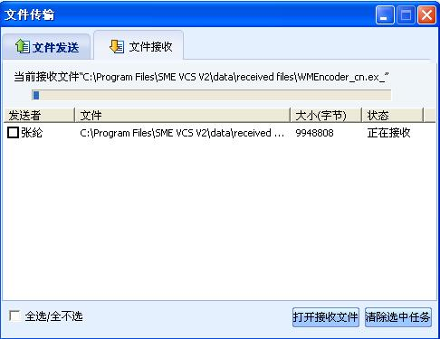
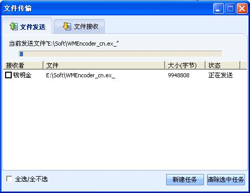

可以给会议中的其他人发送文件。点击“会议”菜单选择“发送文件”，在弹出的对话框中选择要向对方发送文件的参会人员（如果会议中只有两个人，这一步将被略过），如下图所示，或者在参会人上点右键在弹出的菜单中选“发送文件”。

图1 选择参会人员发送文件
点击“确定”，弹出选择要发送的文件对话框选择要发送的文件，如下图所示：

图2 选择要发送的文件
选中文件后，点击“打开”，发送文件传送请求到对方，并等待对方回应，如下图所示：

图3 文件发送-等待回应
在对方的会议室界面弹出提示对话框，如下图所示：

图4 文件发送提示
点击“是”将接收文件加到文件传输队列中，点击“否”拒绝接收文件。
一旦符合文件传输的条件，文件传输队列中的文件开始传输。

图5 接收文件

图6 发送文件
要取消文件传输，在文件发送方或文件接收方的文件传输任务前打勾选中，点击“清除选中的任务”按钮，即可取消文件传输任务。